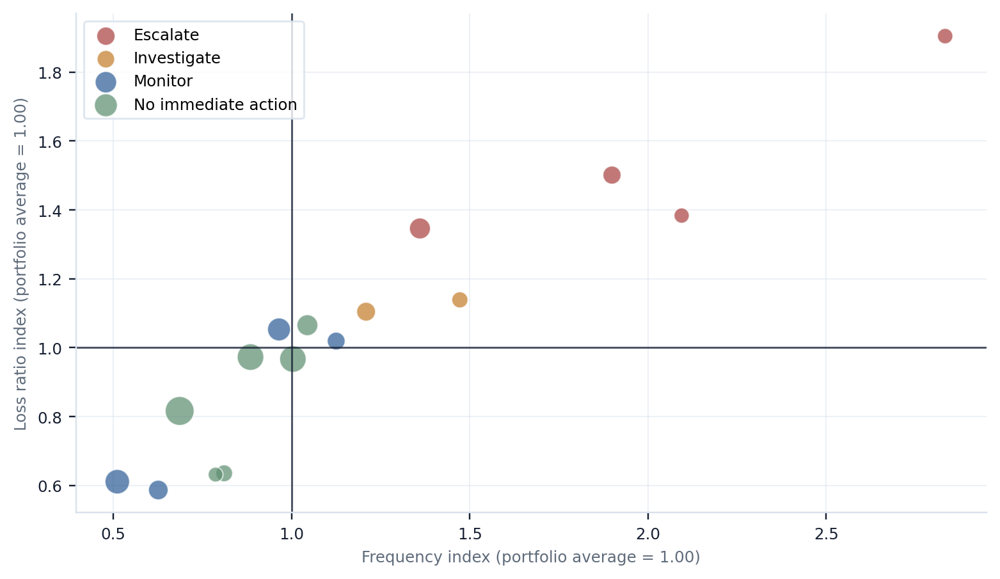
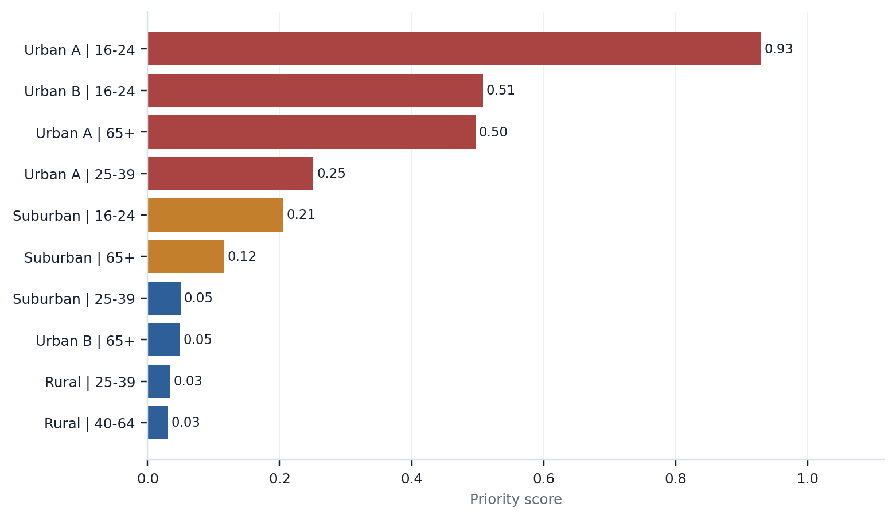

Miguel Tovar Actuarial Analytics
P&C Portfolio Monitoring
Synthetic sample · Commercial monitoring preview
Sample actuarial analytics workflow
P&C Portfolio Monitoring
A compact early warning diagnostic that helps insurance teams identify segments with elevated frequency, loss ratio pressure, observed-versus-expected deterioration, and recurring monitoring priorities before committing to a full pricing or underwriting review.
Core business question
Which segments should be escalated, investigated, monitored, or left without immediate action, and is there enough technical support to prioritize the next review?
What the workflow reviews
- Portfolio experience by segment
- Frequency, loss ratio, and pure premium pressure
- Observed-versus-expected claim diagnostics
- Model calibration and residual signals
- Monitoring watchlist by escalation level
What it helps decide
- Which segments should be escalated first
- Which underwriting rules, coverage terms, or risk classifications deserve review
- Where experience is worse than model expectation
- Which areas should be monitored rather than repriced immediately
- Whether deeper pricing work is justified
Portfolio warning matrix
Segments are plotted by technical pressure and warning level. Marker size reflects exposure, so higher-volume issues remain visible during portfolio review.

Top monitoring priorities
Segments are ranked using adverse frequency, loss ratio, O/E, credibility, and volume signals. The purpose is structured escalation, not automatic repricing.

Typical deliverables
Monitoring watchlist, Excel review pack, segment diagnostics, executive memo, rationale file, and technical appendix if needed.
Intended users
Pricing actuaries, pricing managers, underwriting managers, analytics teams, MGAs, program administrators, and consultants.
Suggested next step
Review one book, program, territory cluster, or segment group and identify 3–5 escalation, investigation, or monitoring priorities.